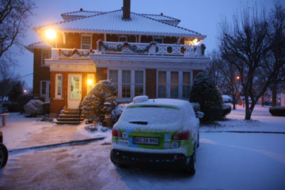
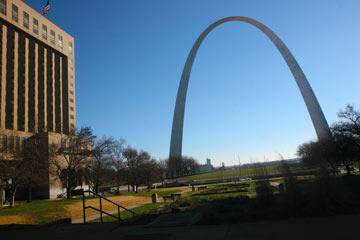
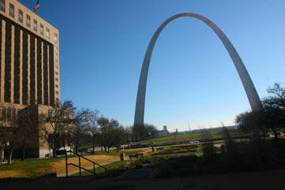
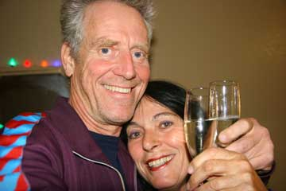
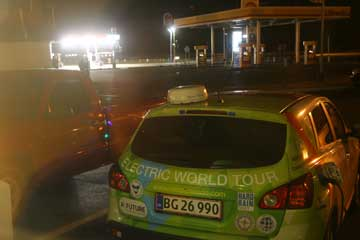
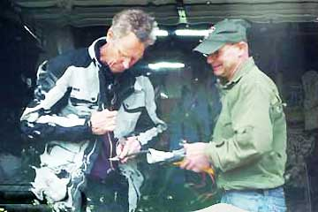
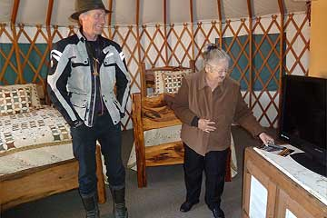
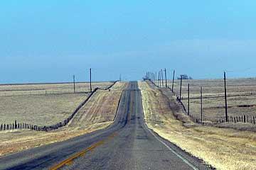
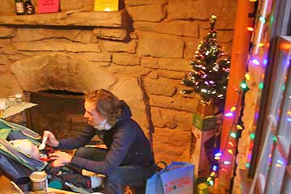
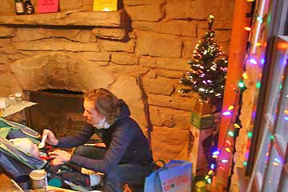

Der var sne i luften over Peru. Vi ringede fra bilen via vores uundværlige satellittelefon og sikrede os at der var plads på et hotel, som vi havde fundet på internettet. Men da vi kom til adressen sidst på eftermiddagen stod der Maple Leaf Inn, bed and breakfast. Og der var ingen hjemme. Vi ringede igen, værterne ville være hjemme om en time. Vi vandrede ned i byen, besøgte det lokale værtshus hvor folk var føget sammen ved baren. Ved jernbanen strøg togene forbi i snefoget med en langstrakt fløjten. Da vi vendte tilbage til huset og kom indenfor hos de venlige værter, viste det sig at vi var kørt til den forkerte adresse. Men det var kun heldigt, for vi fik et luxusophold med god strøm til Grønne. Huset var stadig fuldt af nisser og engle og et yndigt juletræ i hvert eneste værelse.
Nina


Der var ingen RV-parks i nærheden. Mens vi tøede op i en kaffebar søgte jeg på nettet. Indianapolis State Fair skulle have "hook-ups". Hvis vi ikke havde ringet ville vi have troet alt var lukket. Men på en øde plads var der faktisk stik med strøm. Det begyndte at sne kraftigt imens vi holdt ladepause. På den store dyrskueplads besøgte vi travbanen og Dan Statlers stald med fuldblodsheste og bagefter så vi ishockeytræning. Det frøs 6 grader da vi kørte videre og motorvejen nordpå var lukket. I byen Peru måtte vi standse ved et lille motel. Varmeovnen blev taget fra og Grønne tilsluttet værelsets eneste 220 V-stik. Vi krøb ned i vores soveposer.
Hjalte


Gårdene i Indiana ser ud til at være i bedre stand end sydpå. Hvidmalede træhuse, hundrede år gamle og fulde af spir og verandaer kanter hovedgaden i de småbyer vi kører igennem. Det bliver hurtigt mørkt og vi bevæger os gennem et usynligt landskab af skygger og fjerne lys. Vi hører spøgelseshistorie på CD-spilleren og lægger først ikke mærke til de blå blink som følger efter os. Jeg stopper og Nina hopper ud. En politimand nærmer sig med en lommelygte. Han lyser ind i kabinen. Forbipasserende har ringet til politiet fordi vi kørte langsomt og han vil se om vi er intoxicated. Elbil? Spare på strømmen? Så forstår han bedre og ønsker os god tur!
Hjalte
 

Teresa gav os en hvirvelsvindtur gennem St. Louis. Byen var vært for verdensudstillingen i 1904, 106 år før Shanghai, og dengang var automobilet en stor nyhed. Et smukt glashus med palmer var bevaret fra dengang. Eero Sarinens gigantiske bue ved Missisippifloden gjorde et stort indtryk. Dristig og enkel. På The MOTO Museum så vi en imponerende samling sjældne motorcykler, og verdens eneste træmotorcykel! Før vi kørte videre prøvede vi Teresa os Marks Tesla sportsvogn. Overbevisende! 200 Kw trækker fremad! Så måtte vi sige farvel til de søde mennesker og kørte ind i Illinois.
Hjalte


Arkansas var rønner på landet, Little Rock fuld af Clintoniania og en meget stille nytårsaften. Lige da vi var kørt ind i Little Rock og holdt for rødt lys standsede en dame sin bil og rullede vinduet ned. "Er den virkelig eletrisk?" råbte hun "Hvor fedt, velkommen til Little Rock!" Hun ledte os hen til River Market, et kommunalt initiativ hvor folk fra hele verden solgte hjemmelavet mad. En syrisk dame serverede falafel for os og bagefter drak vi stærkt kaffe ved en anden bod. Familier hyggede sig og et juletræ pyntede. Stemningen var afslappet og god. Verden er gået fremad siden Little Rock var synonym med racisme og vold. På motellet i Prescott nord for Little Rock viste fjernsynet fest på Times Square i New York. Nina havde købt champagne og glas og vi skålede for det nye år. Og en time senere skålede vi igen, nu sammen med festen i Chicago og sådan fortsatte vi alle tidszoner igennem. GODT NYTÅR!
Hjalte

Jeg Grønne står udenfor motellet og summer strøm fra Nina og Hjaltes værelse. Jeg har nu rejst 189 dage med dem. På de første 20.000 km. har jeg ikke fået vist alt hvad jeg kan. Hvis sandheden skal frem er de bange for at træde speederen i bund. De lunter jorden rundt. Men OK, det gælder om at komme langt på hver opladning og med en elbil må man køre langsomt for at komme hurtigt frem. Ovre ved flagstangen sender et par unge fyre nytårsraketter afsted. Nu ser jeg Nina og Hjalte kigge ud af vinduet. De skåler. GODT NYTÅR ALLESAMMEN!
Grønne

Ida og Elliot vinkede farvel i Dallas lufthavn. Nina og jeg har nydt hvert eneste øjeblik med dem i Grønne. På de engelske jomfruøer venter far Hans og badeferie. Vi vil se dem igen i New York om en måned. I Richardson, en forstad til Dallas, ventede Paul fra Electro Auto Association. Vi fik tilsluttet Grønne i hans garage. Elbilklubben er aktiv her i Dallas og mange har selv konstrueret elbiler. Paul har bestilt en Leaf, Nissans første elbil, og han er nr. 6 på ventelisten hos den lokale forhandler. Han fortæller at for mange elbil-kørere er et vigtigt motiv for at vælge el, at USA skal være uafhængig af olie (fra Mellemøsten). Vi var ude og spise og kunne overnatte hos Paul, men vi må nordpå og tog afsked med endnu en meget hjælpsom og sympatisk elbilven.
Hjalte

I morges var der igen is på Grønne, og da vi kørte satte vi el-varme på kabinen indtil solen havde varmet vognen op. Elliot måtte have en ren ble halvvejs til Wichita Falls. På en ny campingplads for RVs havde de både vielseskapel og - meget overraskende - en mongolsk jurte. Vi havde ikke brug for det første da vi har været gift i 35 år men nød den anden, Den amerikanske kopi var rund som teltene er i Mongoliet, men indrettet helt på amerikansk med springmadrasser, quiltede tæpper, air-condition, toilet, køleskab, mikrobølgeovn, kaffemaskine tv og internet. Kønt og behageligt, og vi syntes at vi havde fortjent det, ligesom de siger i reklamerne. Og Grønne fik sin egen RV plads med ladestander. I nogle af de store RV´s boede folk som flyttede rundt efter hvor de kunne få arbejde - camp-workers.

Grønne var dækket af is da vi vågnede. Batterierne var næsten frosne, men bilen starede som normalt. Og den havde samme rækkevidde som på varme dage fordi batterierne varmer op når de bliver brugt. Solen skinnede koldt på det gule græs fra en blå himmel. Landet syntes tømt for mennekser. I Vernon fandt vi et motel drevet af indere - vi kunne lugte karry'en i lobby'en. Det var eftermiddag og vi gik en lang tur i byen. Det virkede som om byen var forladt for lang tid siden. Benzintanke, reklamer og butiksfacader fra 1960'erne - alle forladte. Kun bedemanden havde nye skinnende biler og et moderne hus. Vi koblede Grønne til aircondition-stikket i vores hotelrum. Vi begynder at vide hvor vi finder 220 V.
Hjalte


Vi gik morgentur mellem canyon'ens bjergformationer, som tog sig betagende ud i det kolde solskin. Vejen til Memphis gik først op og ned, men landet blev efterhånden helt fladt. Næsten ufatteligt fladt strakte det sig kilometer efter kilometer med afhøstede korn- og bomuldsmarker. I centrum af Memphis var der næsten kun marskandiserbutikker. Mange var lukkede for altid og i vildt forfald. En kirke reklamerede for sig selv med en lille lysavis, Der var ingen mennesker ude, byen var som uddød, men vi havde jo holdt jul, så vi kunne slappe af. Jernbanen ved siden af byen dundrede forbi med lange vemodige fløjt. På motellet varmede vi indisk mad fra en dåse i værelsets mikrobølgeovn. Grønne fik stikket fra varmeblæseren med en ledning ud ad døren, så vi krøb tidligt i soveposerne for ikke at fryse.
Nina
 

I aften vil vi fejre jul, så vi køber godt ind i Amarillos eneste helsekostforretning. På vejen til Palo Duro Canyon State Park besøger vi The Panhandle Plains Historical Museum i Canyon. Et superinteressant, informativt, engagerende og stort museum der fortæller det nordlige Texas' historie fra stenalderen til indianerne, nybyggerne og nutiden med olie og stor-landbrug. Palo Duro er USAs næststørste canyon og vi har lejet en hytte helt nede i bunden. Den er ganske lille, af sten og iskold. Den ligner noget fra en eventyrbog, men der er intet køkken. Ildstedet må vi ikke bruge på grund af brandfaren, så vi tænder en varmeblæser. På Idas campingbrænder koger vi risengrød og laver gløgg. Et lille elektrisk juletræ som vi har købt i Wallmart bliver foldet ud og vores julelamper hængt op. Så synger vi alle julesangene for Elliot, som har fået lidt nyt legetøj. Bagefter hører vi krimi fra computeren og falder i søvn i den store dobbelte køjeseng i soveposerne. Grønne har fået sin egen plads med ladestander lige i nærheden, hvor den står og suger lækker 220 volt strøm i sig under den enorme stjernehimmel.